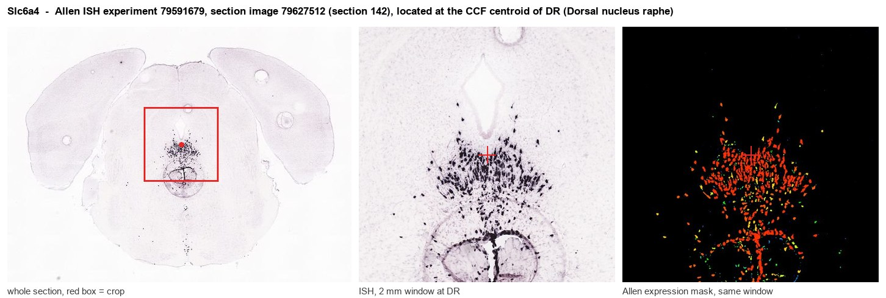
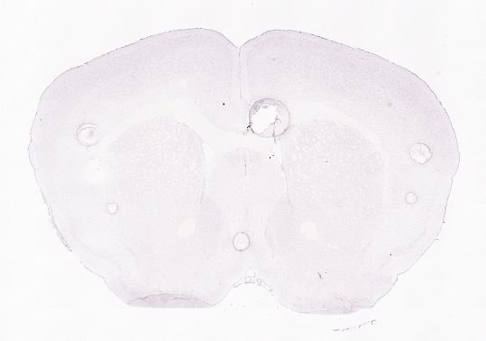
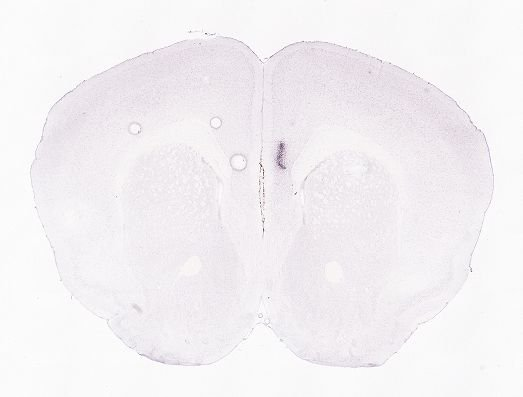
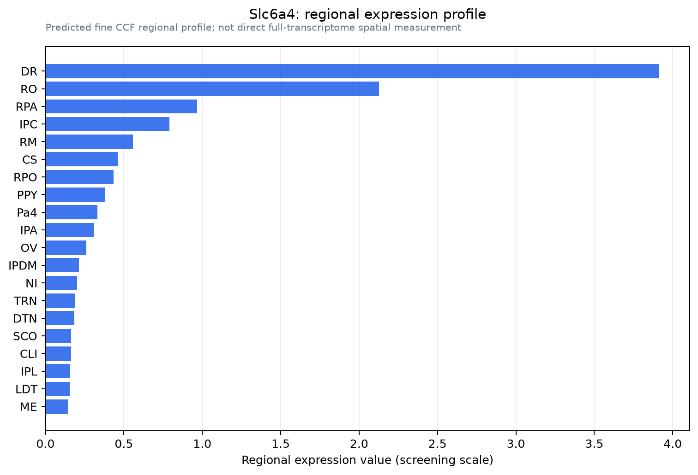

Slc6a4
Sodium-dependent serotonin transporter (SERT) (5HT transporter) (5HTT) (Solute carrier family 6 member 4)
Spatial tier: STRICT_EXCLUSIVE · Class: ION_CHANNEL · Top region: DR (Dorsal nucleus raphe) · Positive regions: 3/554
53.4Discovery Score
50.9Targetability Score
CEvidence grade C
What this means: Slc6a4: predicted fine-region profile is strict-exclusive, with 3 positive regions out of 554 (limit 12); direct spatial validation is required.
Function in DR: evidence, prediction, innovation
- Gene function
- Slc6a4 encodes SERT, the Na+/Cl- dependent plasma-membrane serotonin transporter of the SLC6 family. It clears released 5-HT back into serotonergic neurons, terminating transmission and recycling transmitter, and is the molecular target of SSRIs, tricyclics, MDMA and cocaine. In the brain its expression is essentially confined to serotonergic raphe neurons and their axons.
- Region function
- The dorsal raphe supplies most forebrain serotonin and regulates mood, anxiety, patience and reward waiting, aversive learning and sleep-wake control through topographically organised projections.
- Published in this region
- direct SERT is a defining marker of dorsal raphe serotonergic neurons and their terminals. Bengel et al. 1998 (Mol Pharmacol) generated Slc6a4 knockout mice showing disrupted brain serotonin homeostasis and loss of MDMA-induced locomotor responses. Zhuang et al. 2005 (J Neurosci Methods) created the SERT-Cre knock-in (JAX 014554) that drives recombination in raphe 5-HT neurons and is now standard for conditional manipulation. Cardozo Pinto et al. 2019 (Nat Commun) systematically compared SERT-Cre and other neuromodulatory driver lines and mapped their organisational principles within the dorsal raphe.
- Predicted function
- Prediction: SERT sets extracellular 5-HT lifetime at raphe somatodendritic and terminal release sites, so its level tunes 5-HT1A autoreceptor feedback and the gain of the whole serotonergic system. Genetic or pharmacological blockade raises extracellular 5-HT, desensitises autoreceptors over days, reduces raphe firing and yields increased anxiety-like behaviour and altered stress coping in constitutive knockouts, while acute SSRI or chemogenetic excitation of SERT+ DR neurons increases patience and reduces immediate reward seeking.
- Innovation
- ★☆☆☆☆ 1/5 SERT in the dorsal raphe is among the most intensively studied gene-region pairs in neuroscience.
- Tools
- SERT-Cre knock-in (B6.129(Cg)-Slc6a4tm1(cre)Xz/J, JAX 014554), ePet-Cre (JAX 012712), Slc6a4 knockout mice and rats; SSRIs fluoxetine, citalopram, escitalopram; radioligands [3H]citalopram and PET tracer [11C]DASB; widely validated anti-SERT antibodies; Allen mouse ISH datasets 79591679 and 2623/2624.
- References
Direct evidence located at the region

Allen ISH experiment 79591679, section image 79627512 (section 142): the section that contains the CCF centroid of Dorsal nucleus raphe according to the Allen image-to-atlas alignment (reference_to_image), with a 2 mm window around that point. Left: whole section, red box = window. Middle: ISH signal. Right: Allen's expression-mask view of the same window. open this image in the Allen viewer
Look it up yourself: Allen Mouse Brain ISH for Slc6a4Allen reference atlas: DR (structure 872)ABC Atlas MERFISH viewer(in the ABC Atlas choose dataset MERFISH-C57BL6J-638850-CCF, colour cells by gene "Slc6a4" or by parcellation_substructure "DR")All genes confined to DR + 3-D brain
Direct spatial evidence
MERFISH REGION LOCATOR

DIRECT ALLEN ISH

DIRECT ALLEN ISH

Regional expression figure

Predicted WMB × fine-CCF profile; not direct full-transcriptome spatial measurement.
Spatial profile
Evidence and specificity
- Evidence status
- PREDICTED_FINE
- Direct sources
- None; predicted localization only
- Exclusive threshold
- 12 positive regions out of 554
- Spatial specificity
- 0.515
- Top-region fraction
- 0.282
- Filter status
- PASS
Interpretation limits
- Cell-type-to-region projection is imputed expression, not direct spatial measurement.
- Adult reference atlases do not establish stability across age, sex, strain, state, or disease.
- Transcript abundance does not guarantee protein abundance or genetic-tool performance.